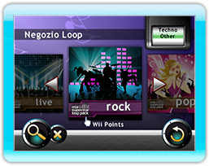

22 |
Negozio Loop |
 |
|

Al Negozio Loop si può accedere sia dall’icona Menu di avvio che dall’icona Menu Mix selezionando il ‘Negozio Loop’. Segui le istruzioni sullo schermo per visualizzare e scaricare fantastici pacchetti di loop disponibili per Mix Superstar e portare i tuoi mix a un altro livello!
Per scaricare i pacchetti aggiuntivi seleziona prima uno dei quattro generi musicali principali e saranno così visualizzati i pacchetti disponibili al momento per quel genere. Usa il pulsante A per selezionare il pacchetto che vuoi scaricare; la copertina dell’album si girerà per mostrare sul retro una descrizione del pacchetto di loop. Premi il bottone ‘Scarica’ e segui i passaggi sullo schermo per scaricare il pacchetto di loop.
Se non hai abbastanza spazio libero per scaricare un pacchetto, puoi rimuovere un pacchetto di loop esistente usando il pulsante ‘Rimuovi pacchetti’. Ora avrai una lista di pacchetti esistenti che hai scaricato precedentemente. Seleziona il pacchetto da rimuovere premendo il pulsante A e poi seleziona il pulsante ‘Rimuovi’. Tutti i pacchetti di loop rimossi possono essere riscaricati quante volte vuoi senza costi aggiuntivi.
Ci sono molti pacchetti di loop che possono essere scaricati in questo gioco. Sono richiesti Wii Points per scaricare i pacchetti di loop disponibili. (Servizio a pagamento). Si richiede uno spazio libero nella memoria di sistema della console Wii per scaricare i pacchetti di loop. Se non c’è abbastanza spazio, cancella i dati non necessari nella memoria di sistema Wii o spostali nella scheda SD.
Tutti i pacchetti di loop scaricati possono essere usati solo con Mix Superstar. |
 |
 |
 |